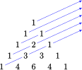

Section 9.7 Projects for Chapter 9
Project 9.6. Fish Population.
Here is a simplified model for the growth of a population of fish. The size of the stock is measured by the combined weight of the population, called the biomass. The population begins with two fish, a male and a female, each weighing one unit. The fish grow one unit of mass each year, and die after their third year. Every pair of fish gives birth to a new pair of unit-mass fish each year.
-
Let \(A_n,~B_n,\) and \(C_n\) represent the number of one-unit, two-unit, and three-unit fish in the population in year \(n\text{,}\) and let \(S_n\) be the total biomass of the stock in year \(n\text{.}\) Complete the table.
\(n\) \(A_n\) \(B_n\) \(C_n\) \(S_n\) \(0\) \(2\) \(0\) \(0\) \(2\) \(1\) \(2\) \(2\) \(0\) \(6\) \(2\) \(4\) \(2\) \(2\) \(14\) \(3\) \(\hphantom{0000}\) \(\hphantom{0000}\) \(\hphantom{0000}\) \(\hphantom{0000}\) \(4\) \(\hphantom{0000}\) \(\hphantom{0000}\) \(\hphantom{0000}\) \(\hphantom{0000}\) \(5\) \(\hphantom{0000}\) \(\hphantom{0000}\) \(\hphantom{0000}\) \(\hphantom{0000}\) \(6\) \(\hphantom{0000}\) \(\hphantom{0000}\) \(\hphantom{0000}\) \(\hphantom{0000}\) \(7\) \(\hphantom{0000}\) \(\hphantom{0000}\) \(\hphantom{0000}\) \(\hphantom{0000}\) \(8\) \(\hphantom{0000}\) \(\hphantom{0000}\) \(\hphantom{0000}\) \(\hphantom{0000}\) - Plot the biomass \(S_n\) as a function of the year, and connect the data points with a smooth curve.
- Write recursive formulas for \(A_n,~B_n,\) and \(C_n\text{,}\) starting with \(A_0=2,~B_0=0,\) and \(C_0=0\text{.}\)
- Write a recursive formula for \(S_n\) in terms of \(A_n,~B_n,\) and \(C_n\text{.}\) Can you express \(S_n\) using only terms of the sequence \(A_n\text{?}\)
Project 9.7. A Logistic Model.
The model in the previous project is only useful for a limited time, because the fish population cannot continue to grow indefinitely. The model described below is called a logistic model. Suppose a fishery starts with a stock of 20 fish, so \(S_0 = 20\text{.}\) The growth \(G_n\) of the population in year \(n\) is given by
and
- Make a table showing values of \(S_n\) and \(G_n\) up to \(n=20\text{,}\) rounding values of \(G_n\) to whole numbers.
- Plot the values of \(G_n\text{.}\) What is the shape of the graph? In what year does the fish population grow the most?
- Plot the values of \(S_n\text{.}\) What is the limiting value of the fish population? Describe the growth of the population.
The next six projects derive formulas for arithmetic and geometric series
Project 9.8.
In this project we will find a formula for the sum of the arithmetic series
This is the sum of the first \(N\) positive integers.
- How many terms are in the series?
-
If we call this sum \(S\text{,}\) then
\begin{equation*} S=1+2+3+\cdots+(N-2)+(N-1)+N \end{equation*}Rewrite the sum by reversing the order of the terms on the right side of the equation and add the result "columnwise" to the equation above. What is the sum of the two numbers in any one column on the right side?
- From part (a) you know how many columns there are. Based on that number and your answer to part (b), write an expression for \(2S\) and solve for \(S\text{.}\)
-
Use your answer from part (c) to write a formula for the sum of the arithmetic series
\begin{equation*} 1+2+3+\cdots+(N-2)+(N-1)+N \end{equation*}
Project 9.9.
In this problem we will find a formula for the sum of an arithmetic series when we are given the first term \(F\) the last term \(L\text{,}\) the common difference \(d\) and the number of terms \(N\text{.}\)
- If we call the sum \(S\text{,}\) then\begin{equation*} S=F+(F+d)+(F+2d)+\cdots+(L-2d)+(L-d)+L \end{equation*}Rewrite the sum by reversing the order of the terms on the right side of the equation and add the result "columnwise" to the equation above. What is the sum of the two numbers in any one column on the right side?
- You know that the original series has \(N\) terms. Based on your answer to part (a), write an expression for \(2S\) and solve for \(S\text{.}\)
- Use your answer from part (c) to write a formula for the sum of an arithmetic series when we are given the first term \(F\) the last term \(L\text{,}\) the common difference \(d\) and the number of terms \(N\text{.}\)
Project 9.10.
In this problem we will find a formula for the sum of a geometric series
where \(r\) is an arbitrary constant.
- What is the common ratio of consecutive terms?
- If we call the sum \(A\text{,}\) then\begin{equation*} A=1+r+r^2+\cdots+r^{N-1}+r^N \end{equation*}Multiply both sides of the equation by the common ratio. What is the result?
- Subtract your last equation from the equation for \(A\) given above and simplify. What is the result?
- Starting with your answer to part (c), solve for \(A\text{.}\) (Hint: Start by factoring out \(A\) on the left side of the equation.)
- Use your answer from part (d) to write a formula for \(1+r+r^2+\cdots+r^{N-1}+r^N\text{.}\)
Project 9.11.
In this problem we will find a formula for the sum of a geometric series
where \(a\) and \(r\) are arbitrary constants
- What is the common ratio of consecutive terms?
- If we call this sum \(A\text{,}\) then\begin{equation*} A = a+ar+ar^2+\cdots+ar^{N-1}+ar^N \end{equation*}Multiply both sides of the equation by the common ratio. What is the result?
- Subtract your last equation from the equation for \(A\) given above, simplify, and factor out \(A\) on the left side of the equation and \(a\) on the right. What is the result?
- Starting with your answer to part (c), solve for \(A\text{.}\)
- Use your answer from part (d) to write a formula for \(a+ar+ar^2+\cdots+ar^{N-1}+ar^N\text{.}\)
Project 9.12.
In this problem we will find a formula for the sum of an arithmetic series when we are given the first term \(F\text{,}\) the common difference \(d\text{,}\) and the number of terms \(N\text{,}\) but we are not given the last term.
- Because the common difference is \(d\text{,}\) when we add \(d\) to a term we get the next term. The first term is \(F\text{,}\) so the second term is \(F+d\text{,}\) and the third term is \(F+2d\text{.}\) How can you express the third term? How can you express the ninth term?
- How can you express the \(N\)th (or last) term \(L\) of the series in terms of \(F\text{,}\) \(d\text{,}\) and \(N\text{?}\)
- Now you know the first term \(F\text{,}\) the last term \(L\text{,}\) the common difference \(d\text{,}\) and the number of terms \(N\text{.}\) Use the hints to Problem 42 to fnd a formula for the value of the series.
Project 9.13.
In this problem we will find a formula for the sum of a geometric series
where \(a\) and \(r\) are arbitrary constants. \(M\) and \(N\) are positive integers with \(M \lt N\text{.}\)
- What is the common ratio of consecutive terms?
- If we call this sum \(A\text{,}\) then\begin{equation*} A=ar^M+ar^{M+1}+ar^{M+2}+\cdots+ar^{N-1}+ar^N \end{equation*}Multiply both sides of the equation by the common ratio. What is the result?
- Subtract your last equation from the equation for \(A\) given above, simplify, and factor out \(A\) on the left side of the equation and \(a\) on the right. What is the result?
- Starting with your answer to part (c), solve for \(A\text{.}\)
- Use your answer from part (d) to write a formula for the value of the geometric series\begin{equation*} A=ar^M+ar^{M+1}+ar^{M+2}+\cdots+ar^{N-1}+ar^N \end{equation*}
Project 9.14. Other Properties of Pascal's Triangle.
Pascal's triangle has other interesting properties besides providing the binomial coefficients.
-
Add up the numbers in each row of your Pascal's triangle and fill in the table.
Row \(n\) Sum of Entries \(0\) \(\hphantom{0000}\) \(1\) \(\hphantom{0000}\) \(2\) \(\hphantom{0000}\) \(3\) \(\hphantom{0000}\) \(4\) \(\hphantom{0000}\) \(5\) \(\hphantom{0000}\) \(6\) \(\hphantom{0000}\) - The sum of the entries in row \(n\) of Pascal's triangle is .
-
Now add entries of Pascal's triangle along the diagonal lines indicated below. Fill in two more rows of Pascal's triangle and find two more diagonal sums.
 -
Write the sequence of numbers obtained by taking sums along the diagonal lines. What is the name of this sequence?
The binomial coefficient \(~_nC_k~\) also gives the number of different ways you can choose \(k\) distinct items from a set of \(n\) items. Finding these numbers is important in determining the probability that certain events will occur.
- Find the number of different choices you can make for a four-flavor ice cream sundae if there are six flavors to choose from. (Caution: When you are deciding which entry in the row corresponds to \(k=4\text{,}\) remember that the left-most entry corresponds to \(k=0\text{.}\))
- How many ways can you choose a debate team of three members from a debate club of 5 members?
-
Evaluate the series \(~~\displaystyle{\sum_{k=0}^{10} ~_{10}C_r~} \text{.}\)
(Hint: This is the sum of all the binomial coefficients in the expansion of \((a+b)^n\text{.}\) What did you learn in the previous Investigation about the sum of the terms in a row of Pascal's triangle?)
- Evaluate the series \(~~\displaystyle{\sum_{k=0}^{12} ~_{12}C_r~} \text{.}\)
- How many ways can you choose 6 objects from a set of 49? (This is the number of possible choices in a lottery where you pick 6 numbers from 1 to 49.)
- How many ways can you choose 5 cards out of a deck of 52 distinct cards? (This is the number of different poker hands.)